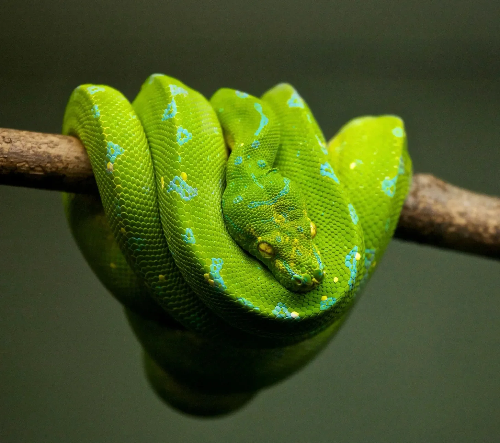

바나비는 안락의자에 편안히 감긴 뱀 슬링키를 응시했다. 슬링키는 차가운 파충류의 눈으로 그를 바라보았다.
[Barnaby stared at the snake, Slinky, coiled comfortably on the armchair. Slinky regarded him with a cold, reptilian stare.]
“정말 확실해, 슬링키?” 바나비가 말했다.
[“Are you quite sure about this, Slinky?” Barnaby said.]
“존재의 본질적인 무의미함에 대해서 말이야?” 슬링키가 건조한 목소리로 말했다. “바나비, 내 사랑하는 소년아, 그건 내가 확신하는 유일한 것이지.”
[“About the inherent meaninglessness of existence?” Slinky said, his voice a dry rustle. “Barnaby, my dear boy, it’s the only thing I’m sure of.”]
바나비는 머리를 긁적였다. 그는 항상 슬링키가 꽤 똑똑한 뱀이라고 생각했지만, 이건 그가 상상할 수 있는 그 어떤 것보다도 대단했다. 지난주만 해도 슬링키는 자기 꼬리를 쫓고 가끔 허물을 벗는 것에 만족했었다. 이제 그는 니체를 인용하고 있었다.
[Barnaby ran a hand through his hair. He’d always thought Slinky was a rather intelligent snake, but this was beyond anything he could have imagined. Just last week, Slinky had been content with chasing his tail and occasionally shedding his skin. Now, he was quoting Nietzsche.]
“하지만 분명,” 바나비가 말했다, “삶에는 그저… 공허함 이상의 무언가가 있어야 해, 그렇지 않아?”
[“But surely,” Barnaby said, “there must be something more to life than just…nothingness?”]
“말해봐, 바나비,” 슬링키가 약간 몸을 풀며 말했다, “네 삶에 의미를 주는 게 뭐지? 네 직업? 네 우표 수집?”
[“Tell me, Barnaby,” Slinky said, uncoiling slightly, “what is it that gives your life meaning? Your job? Your stamp collection?”]
“음, 나는…” 바나비가 더듬거렸다. 그는 최근에 연필깎이 시험관 일자리에서 해고되었고, 그의 우표 수집은 거의 영감을 주지 못했다. “채소 정원을 시작하려고 했어.”
[“Well, I…” Barnaby stammered. He’d recently been laid off from his job as a pencil sharpener tester, and his stamp collection was hardly inspiring. “I was going to start a vegetable garden.”]
“고귀한 추구야,” 슬링키가 말했다, “하지만 결국 헛된 일이지. 채소는 자랄 거고, 너는 그것들을 먹을 거고, 그리고 너는 죽을 거야. 그 안에 무슨 의미가 있겠어?”
[“A noble pursuit,” Slinky said, “but ultimately futile. The vegetables will grow, you will eat them, and then you will die. Where is the meaning in that?”]
바나비는 한숨을 쉬었다. 슬링키의 말이 꽤 우울하긴 했지만 일리가 있었다. 그는 갑작스러운 실존적 공포를 느끼며 소파에 털썩 주저앉았다.
[Barnaby sighed. Slinky had a point, even if it was a rather depressing one. He slumped onto the sofa, feeling a sudden existential dread.]
“절망하지 마, 바나비,” 슬링키가 안락의자에서 미끄러져 내려와 소파로 올라오며 말했다. “이 모든 것의 부조리함 속에는 어떤 아름다움이 있어.”
[“Don’t despair, Barnaby,” Slinky said, slithering off the armchair and onto the sofa. “There is a certain beauty in the absurdity of it all.”]
“아름다움이라고?” 바나비가 말했다. “우리가 하는 모든 것이 결국 무의미하다는 걸 아는 데서?”
[“Beauty?” Barnaby said. “In knowing that everything we do is ultimately pointless?”]
“정확해,” 슬링키가 말했다. “그것이 우리를 기대의 부담에서 해방시켜주지. 우리는 그저 존재하면서, 특별히 즙이 많은 쥐나 따뜻한 햇살 같은 작은 것들을 감상할 수 있어.”
[“Precisely,” Slinky said. “It frees us from the burden of expectation. We can simply exist, appreciate the small things, like a particularly juicy mouse or a warm sunbeam.”]
바나비는 이를 곰곰이 생각해보았다. 어쩌면 슬링키의 말이 맞을지도 모른다. 어쩌면 인생의 의미는 거창한 의미를 찾는 것이 아니라 그저 여정을 즐기는 것일 수도 있다.
[Barnaby considered this. Maybe Slinky was right. Maybe the point of life wasn’t to find some grand meaning, but to simply enjoy the ride.]
“그래서,” 바나비가 말했다, “이제 우리가 뭘 하면 좋을까?”
[“So,” Barnaby said, “what do you suggest we do now?”]
“음,” 슬링키가 말했다, “난 우유 한 그릇이 나쁘지 않겠어. 그리고 어쩌면 우리가 흔한 정원 달팽이의 교미 습성에 대한 다큐멘터리를 볼 수도 있을 거야? 놀랍게도 철학적이거든.”
[“Well,” Slinky said, “I wouldn’t mind a nice bowl of milk. And perhaps we could watch that documentary about the mating habits of the common garden slug? It’s surprisingly philosophical.”]
바나비는 킥킥 웃었다. 그는 여전히 슬링키의 갑작스러운 실존적 위기를 어떻게 받아들여야 할지 확실치 않았지만, 앞으로 일들이 훨씬 더 흥미로워질 것 같은 느낌이 들었다. 그는 슬링키를 위해 우유 한 그릇을 가져와 소파에 자리를 잡고, 이 모든 부조리함을 받아들일 준비를 했다.
[Barnaby chuckled. He still wasn’t entirely sure what to make of Slinky’s sudden existential crisis, but he had a feeling things were about to get a lot more interesting. He fetched a bowl of milk for Slinky and settled down on the sofa, ready to embrace the absurdity of it all.]
다큐멘터리가 시작되자, 바나비는 슬링키가 항상 이렇게 철학적이었는지, 아니면 단순히 자신의 심오한 통찰력을 세상과 공유할 적절한 순간을 기다리고 있었는지 궁금해졌다. 어느 쪽이든, 바나비는 자신의 삶이 다시는 예전과 같지 않을 것임을 알았다. 그에겐 말하는 뱀이 애완동물로 있었고, 그 말하는 뱀은 인생이 무의미하다고 확신하고 있었다. 이는 그가 겪어본 가장 기이하고 우스꽝스러운 상황이었지만, 그는 이 상황을 달리 바꾸고 싶지 않았다.
[As the documentary began, Barnaby couldn’t help but wonder if Slinky had always been this philosophical, or if he’d simply been waiting for the right moment to share his profound insights with the world. Either way, Barnaby knew that his life would never be the same. He had a talking snake for a pet, and that talking snake was convinced that life was meaningless. It was the most bizarre and hilarious situation he’d ever found himself in, and he wouldn’t have it any other way.]
다음 날 아침, 바나비는 슬링키가 실존주의 책을 읽고 있는 것을 발견했다.
[The next morning, Barnaby woke up to find Slinky reading a book on existentialism.]
“좋은 아침, 바나비,“ 슬링키가 고개를 들지 않고 말했다. "사르트르의 불성실 개념의 함의에 대해 생각해 봤어?”
[“Good morning, Barnaby,” Slinky said, without looking up. “Have you considered the implications of Sartre’s concept of bad faith?”]
바나비는 눈을 비볐다. “아니, 별로 안 해봤어, 슬링키. 실존적 불안을 느끼기엔 아직 이른 아침이야.”
[Barnaby rubbed his eyes. “Not really, Slinky. It’s a bit early for existential angst.”]
“말도 안 돼,” 슬링키가 말했다. “실존적 불안은 시대를 초월한 추구야. 어쩌면 그것만이 진정으로 중요한 유일한 추구라고 할 수 있지.”
[“Nonsense,” Slinky said. “Existential angst is a timeless pursuit. One might even say it’s the only pursuit that truly matters.”]
바나비는 한숨을 쉬었다. 이 논쟁에서 이길 수 없다는 걸 알았다. 그는 시리얼을 한 그릇 부어 주방 테이블에 앉았다. 슬링키는 미끄러지듯 다가와 그와 함께 앉았고, 여전히 책을 감고 있었다.
[Barnaby sighed. He knew he wasn’t going to win this argument. He poured himself a bowl of cereal and sat down at the kitchen table. Slinky slithered over and joined him, the book still in his coils.]
“있잖아, 바나비,” 슬링키가 말했다. “생각해봤는데, 만약 인생이 정말로 무의미하다면, 우리는 혼돈을 받아들여야 해. 그저 무슨 일이 일어날지 보기 위해 전혀 말이 안 되는 일들을 해야 해.”
[“You know, Barnaby,” Slinky said, “I’ve been thinking. If life is truly meaningless, then perhaps we should embrace chaos. We should do things that make absolutely no sense, just to see what happens.”]
바나비는 눈썹을 치켜올렸다. “예를 들면?”
[Barnaby raised an eyebrow. “Like what?”]
“예를 들어 슈퍼마켓에 투투를 입고 가는 거야,” 슬링키가 말했다. “아니면 다람쥐에게 밴조 연주를 가르치려고 시도하는 거지. 아니면 실내 화초를 위한 철학 운동을 시작할 수도 있어.”
[“Like wearing a tutu to the grocery store,” Slinky said. “Or trying to teach a squirrel how to play the banjo. Or maybe we could start a philosophical movement for houseplants.”]
바나비는 웃음을 참을 수 없었다. “슬링키, 넌 천재야.”
[Barnaby couldn’t help but laugh. “Slinky, you’re a genius.”]
“알아,” 슬링키가 득의양양하게 혀를 날름거리며 말했다.
[“I know,” Slinky said, with a smug flick of his tongue.]
그리하여 바나비와 슬링키는 일련의 터무니없는 모험을 시작했다. 그들은 다른 쇼핑객들의 즐거움 속에서 슈퍼마켓에 투투를 입고 갔다. 다람쥐에게 밴조 연주를 가르치려고 시도했지만, 다람쥐는 밴조 줄을 먹는 데 더 관심이 있었다. 심지어 실내 화초를 위한 철학 운동을 시작했는데, 놀랍게도 작지만 헌신적인 추종자들을 얻었다.
[And so, Barnaby and Slinky embarked on a series of absurd adventures. They wore tutus to the grocery store, much to the amusement of the other shoppers. They attempted to teach a squirrel how to play the banjo, but the squirrel was more interested in eating the banjo strings. They even started a philosophical movement for houseplants, which surprisingly gained a small but dedicated following.]
그들의 기행은 지역 언론의 주목을 받았고, 곧 바나비와 슬링키는 소소한 유명인사가 되었다. 그들은 텔레비전에서 인터뷰를 하고, 신문에 실리고, 심지어 명문 대학에서 강연을 해달라는 초청을 받았다.
[Their antics attracted the attention of the local media, and soon Barnaby and Slinky were minor celebrities. They were interviewed on television, featured in newspapers, and even invited to give a talk at a prestigious university.]
“이 모든 게 좀 터무니없지 않아?” 바나비가 대학 강연을 준비하면서 슬링키에게 말했다.
[“This is all rather absurd, isn’t it?” Barnaby said to Slinky, as they were preparing for their university lecture.]
“물론이지,” 슬링키가 말했다. “하지만 그게 핵심이야. 우리는 이 모든 것의 무의미함을 받아들이고 그 과정에서 약간의 재미를 즐기고 있는 거야.”
[“Of course it is,” Slinky said. “But that’s the point. We’re embracing the meaninglessness of it all and having a bit of fun along the way.”]
바나비는 미소를 지었다. 그는 슬링키의 말이 일리가 있다는 걸 인정해야 했다. 그들이 터무니없는 것을 받아들인 이후로 그들의 삶은 훨씬 더 흥미로워졌다. 그리고 누가 알겠는가, 어쩌면 그들은 단지 사람들을 웃게 만드는 것만으로도 실제로 세상에 변화를 주고 있을지도 모른다.
[Barnaby smiled. He had to admit, Slinky had a point. Their lives had become a lot more interesting since they’d embraced the absurd. And who knew, maybe they were actually making a difference in the world, even if it was just by making people laugh.]
그들이 가득 찬 강당을 마주하고 무대에 섰을 때, 바나비는 깊은 숨을 들이쉬었다. “신사 숙녀 여러분,” 그가 말했다, “오늘 우리는 여러분께 인생의 의미에 대해 이야기하려고 합니다. 아니, 정확히 말하면 의미의 부재에 대해서요.”
[As they stood on the stage, facing a packed auditorium, Barnaby took a deep breath. “Ladies and gentlemen,” he said, “we’re here today to talk to you about the meaning of life. Or rather, the lack thereof.”]
슬링키가 연단 위로 미끄러져 올라와 청중들에게 매력적인 미소를 지었다. “제 존경하는 동료가 지적했듯이, 인생은 본질적으로 무의미합니다. 하지만 그게 꼭 나쁜 것은 아니에요. 사실, 그것은 꽤 해방감을 줄 수 있죠.”
[Slinky slithered onto the podium and gave the audience a charming smile. “As my esteemed colleague has pointed out, life is inherently meaningless. But that’s not necessarily a bad thing. In fact, it can be quite liberating.”]
바나비와 슬링키는 다음 한 시간 동안 실존주의의 세부 사항들을 논의하며, 그들의 터무니없는 모험에 대한 농담과 일화들로 강연을 풍성하게 했다. 청중들은 매료되었다. 그들은 웃고 울었으며, 강당을 떠날 때는 정말 독특한 경험을 한 것 같은 기분이 들었다.
[Barnaby and Slinky spent the next hour discussing the finer points of existentialism, peppering their lecture with jokes and anecdotes about their absurd adventures. The audience was captivated. They laughed, they cried, and they left the auditorium feeling like they had just experienced something truly unique.]
강연이 끝난 후, 바나비와 슬링키는 그들이 발표한 아이디어들을 논의하고 싶어 하는 학생들과 교수진들에게 둘러싸였다.
[After the lecture, Barnaby and Slinky were surrounded by students and faculty, eager to discuss the ideas they had presented.]
“제 인생을 바꾸셨어요,” 한 학생이 바나비에게 말했다. “전에는 이런 식으로 인생을 생각해 본 적이 없었어요.”
[“You’ve changed my life,” one student said to Barnaby. “I’ve never thought about life this way before.”]
“이 모든 건 슬링키 덕분이야,” 바나비가 그의 철학적인 뱀 동료를 가리키며 말했다.
[“It’s all thanks to Slinky,” Barnaby said, gesturing towards his philosophical snake companion.]
슬링키는 겸손하게 고개를 숙였다. “제게는 영광이었습니다,” 그가 말했다.
[Slinky bowed his head modestly. “It was my pleasure,” he said.]
바나비와 슬링키는 앞으로 수년 동안 그들의 철학적 모험을 계속했다. 그들은 세계를 여행하며 부조리의 메시지를 전파하고 사람들이 존재의 혼돈을 받아들이도록 격려했다. 그리고 비록 그들은 인생의 의미를 찾지는 못했지만, 그들은 훨씬 더 가치 있는 무언가를 발견했다: 무의미함의 아름다움에 대한 깊은 감사.
[Barnaby and Slinky continued their philosophical adventures for many years to come. They traveled the world, spreading their message of absurdity and encouraging people to embrace the chaos of existence. And though they never found the meaning of life, they did find something far more valuable: a deep appreciation for the beauty of the meaningless.]
끝
[The End]